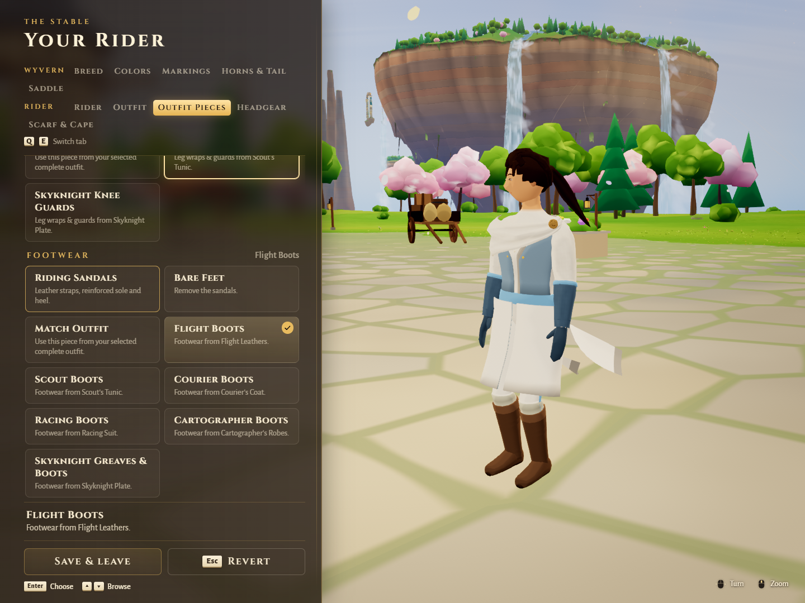
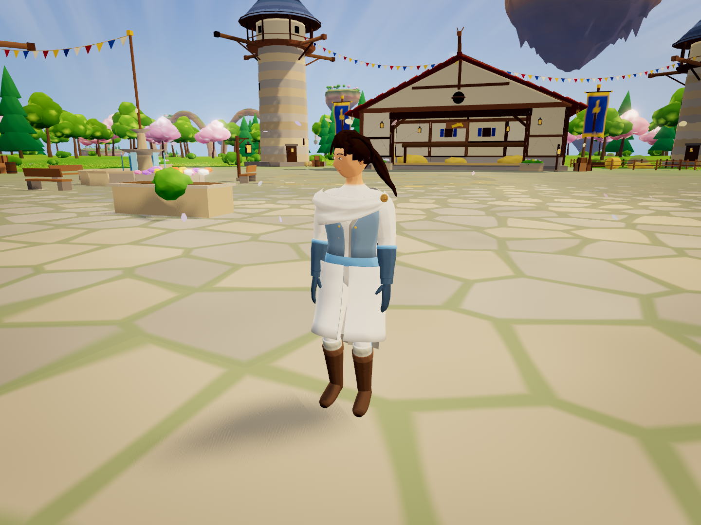
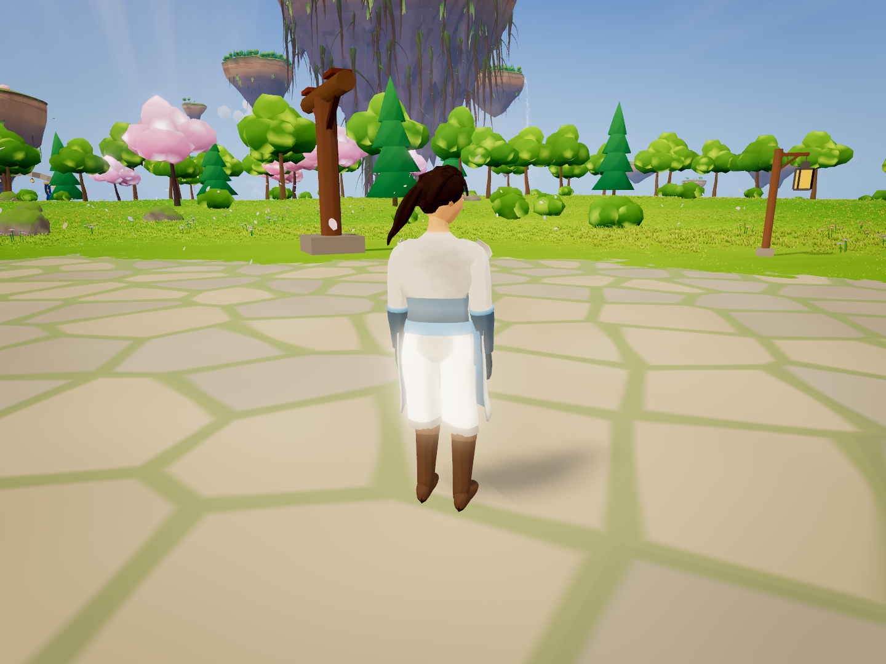
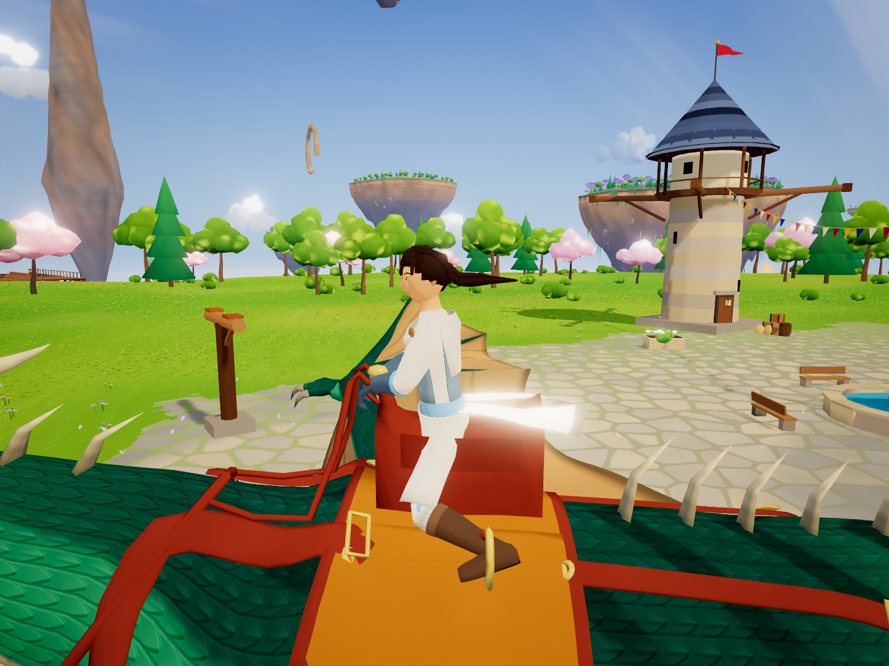
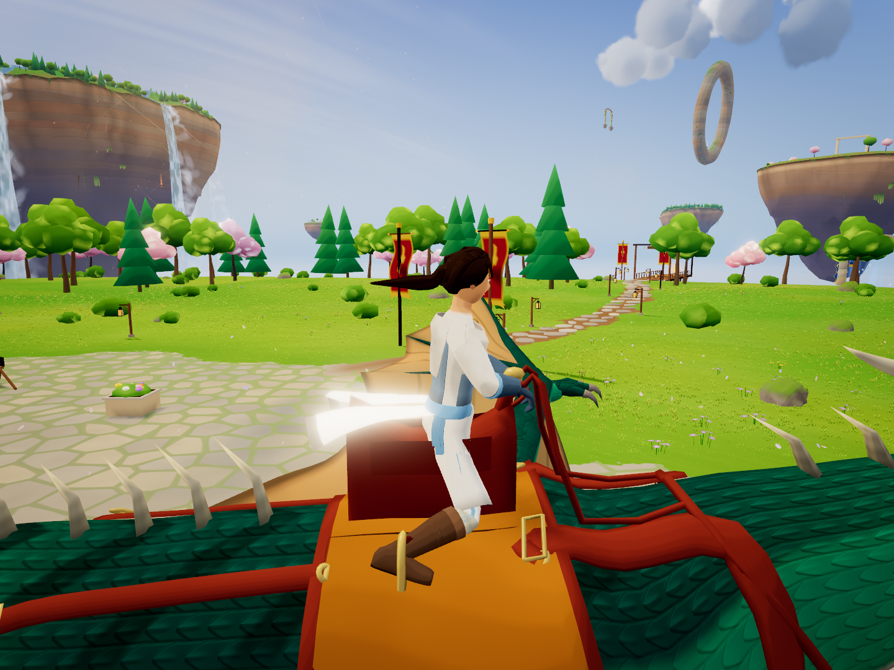
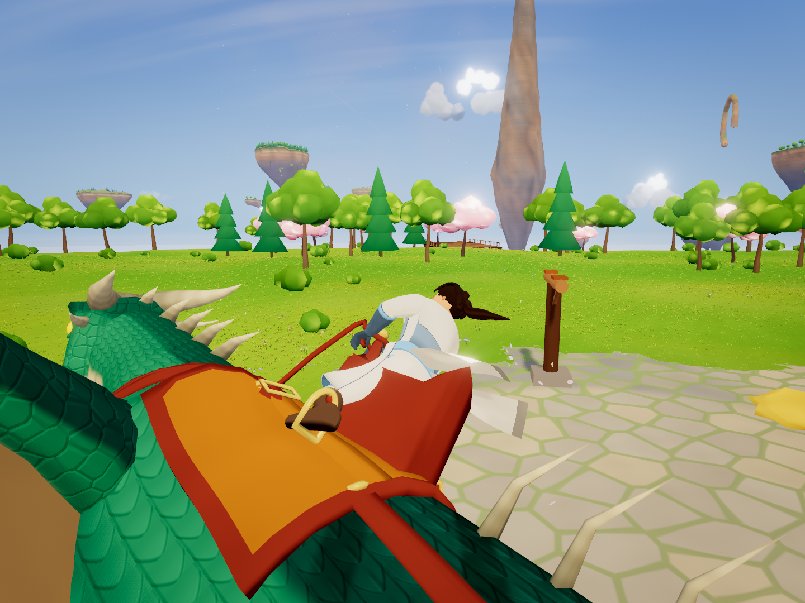
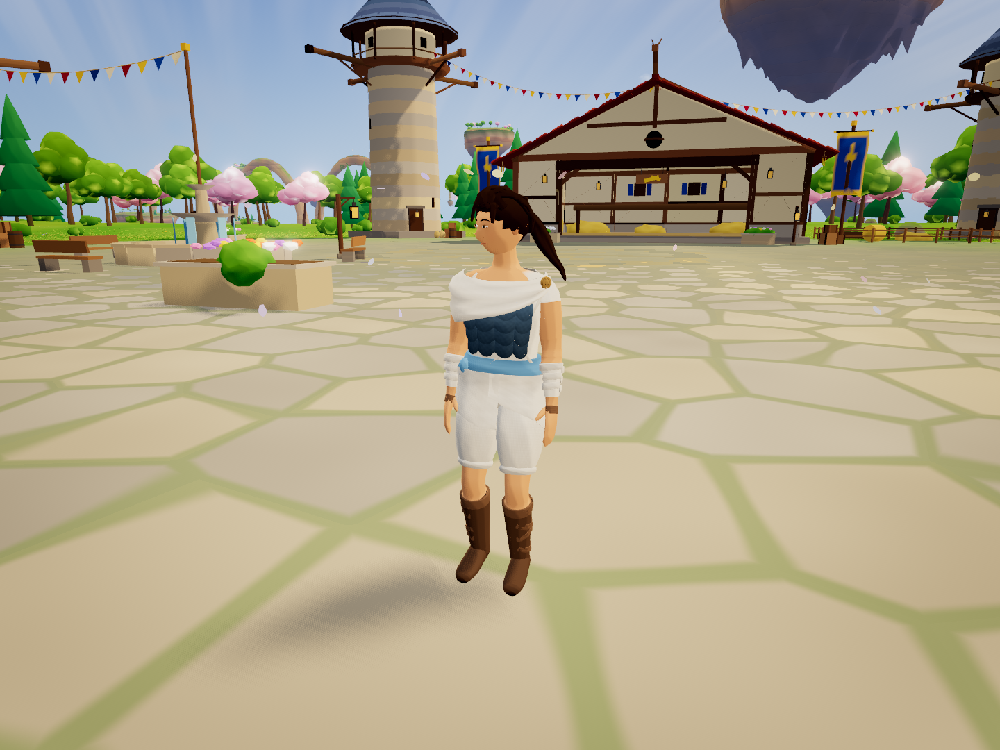
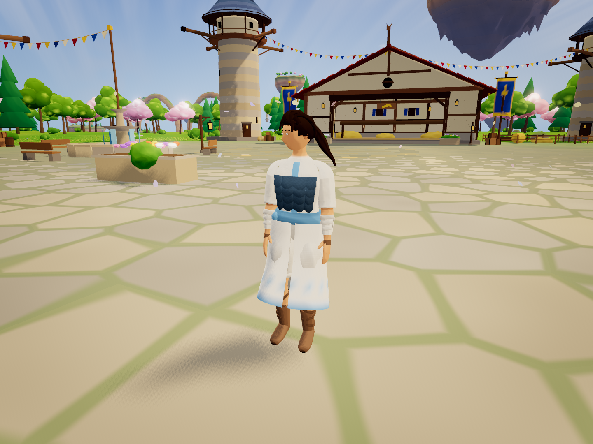

Mix pieces from all seven outfits
Eight garment slots, independent gear dyes, inherited outfit unlocks and complete presets. 32 browser checks passed. The Stable capture is the actual menu. The remaining images are posed actual-engine views, including both mounted sides. The seven-outfit example uses a Courier coat, Racer trousers, Scout jerkin/calf wraps, Travel drape, Cartographer sash, Skyknight gloves and Flight boots.
Actual simulation checks separately cover takeoff, landing and dismount. Edge SwiftShader verifies appearance and integration, not GPU performance. Long coats, robes and accessories may need further combination-specific clearance refinement.
Exact checks and capture queries
stable mixed pieces
seven outfit front
seven outfit back
mounted left
mounted right
mounted bank
linen and flight
robe and scales